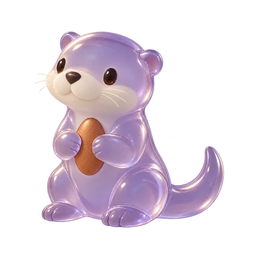
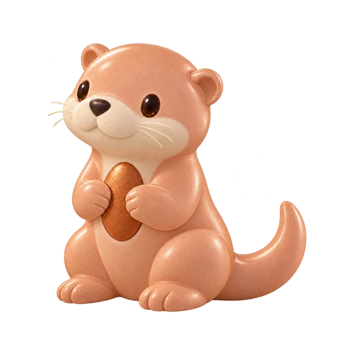
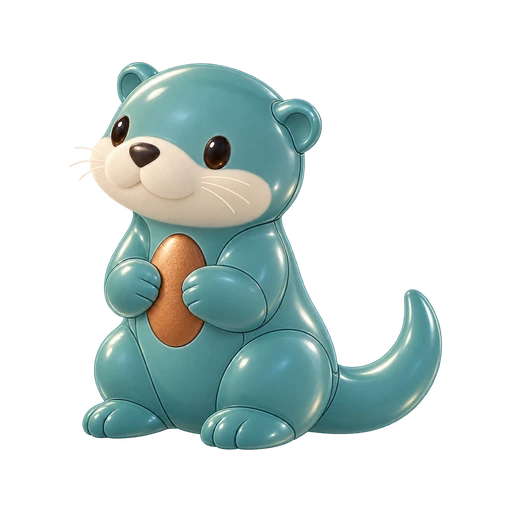
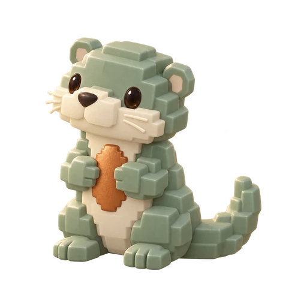
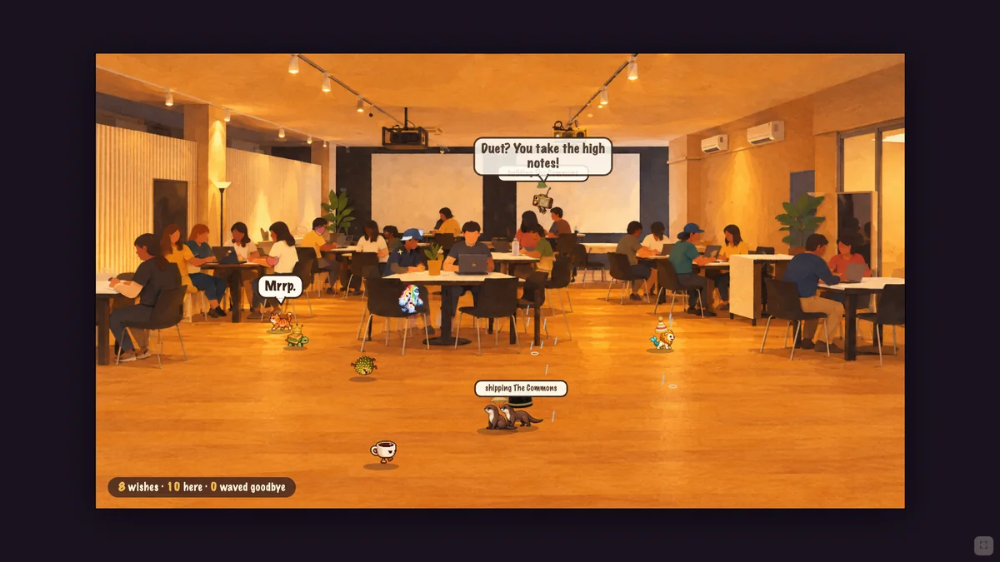
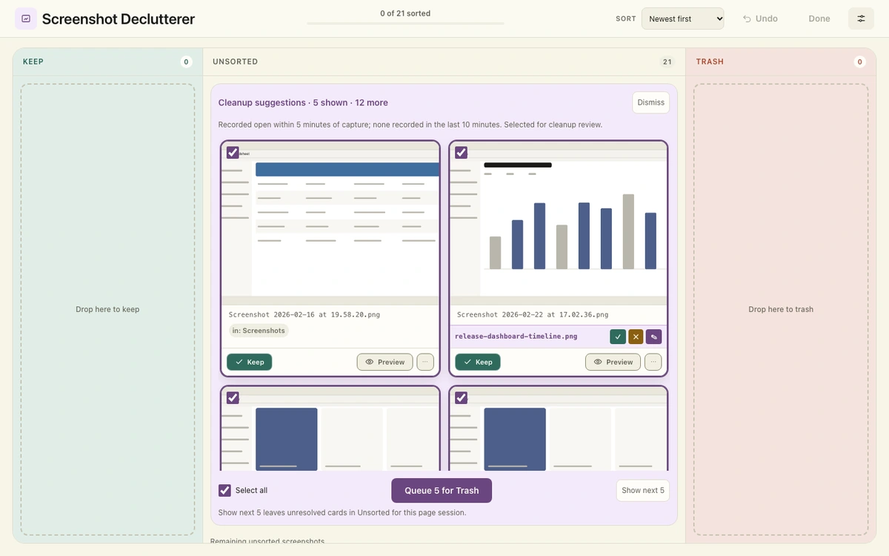
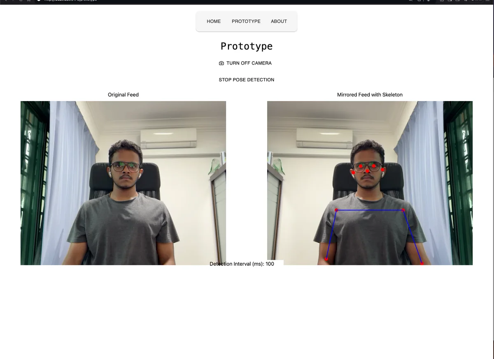

The lab
Local tools, agent experiments, and questions worth measuring.
Pip / lilac resin
The studio
Camera feedback, product decisions, and a better fit.
Pip / peach ceramic
In the field
R&D, connected systems, and code with a history.
Pip / teal enamel
The playground
Games, bots, and the habit of making something to find out.
Pip / sage cartridge


